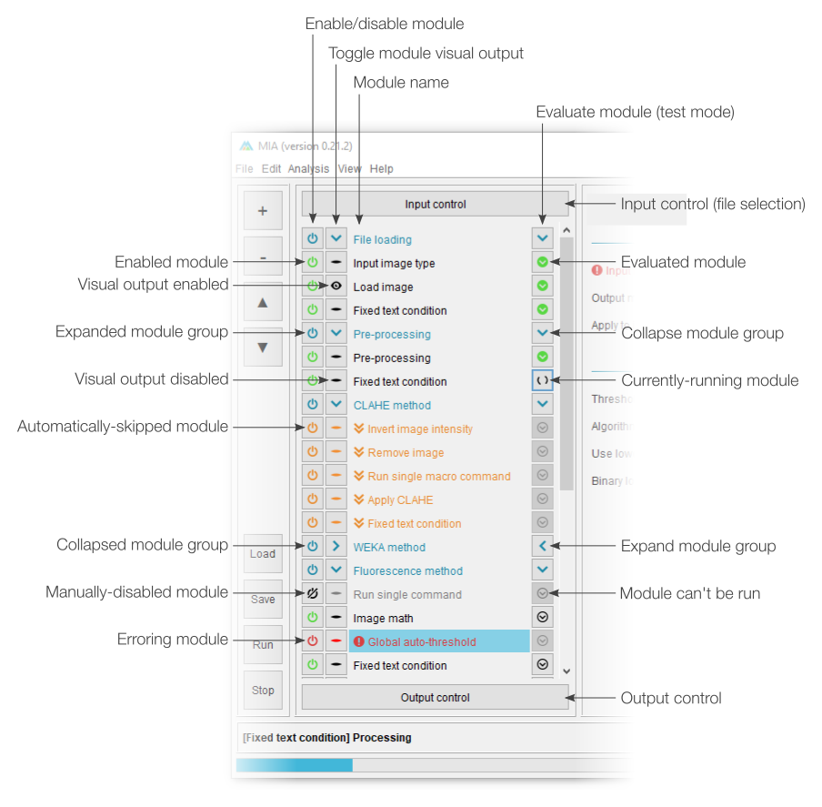

Introduction
Workflows can be constructed and tested in "editing view". Modules are assembled into a sequential list,
with
parameters for each displayed when the corresponding module name is clicked. It's also possible to control
which parameters are visible to end users via processing view. In
editing view,
workflows can be manually run one module at a time or initiated for a full run in the same way as in
processing view.
Details on constructing and editing workflows can be found in the Creating workflows guide.
Details on constructing and editing workflows can be found in the Creating workflows guide.

Click to see full size
Workflow controls
The left-most section of editing view is split into two sections. The top half deals with adding, removing
and sorting modules in the current workflow, while the bottom half offers shortcuts for workflow handling
(e.g. loading and saving).
The + button will open a menu listing all available modules sorted by category. Selecting a module will insert it into the current workflow (see "Modules in workflow" below). If any module is currently selected in the workflow, the new module will be inserted immediately after it, otherwise, it will be added to the bottom of the list. Similarly, the - button will remove any selected modules (note: multiple modules can be selected from the current workflow). The ? and ? buttons can be used to move modules around in the workflow. A full list of modules and descriptions can be found in the module documentation.
Existing workflows can be loaded from .mia files using the "Load" button and saved with "Save". If the workflow has been loaded from a .mia file or has been saved previously, the "Save" button will overwrite the existing file. To save to a new file, please use "File > Save as...". A full analysis run can be started using the "Run" button. This will run the workflow on the file specified in "Input control" and is equivalent to starting an analysis from "processing view". The "Stop" button will terminate any active analysis runs.
The + button will open a menu listing all available modules sorted by category. Selecting a module will insert it into the current workflow (see "Modules in workflow" below). If any module is currently selected in the workflow, the new module will be inserted immediately after it, otherwise, it will be added to the bottom of the list. Similarly, the - button will remove any selected modules (note: multiple modules can be selected from the current workflow). The ? and ? buttons can be used to move modules around in the workflow. A full list of modules and descriptions can be found in the module documentation.
Existing workflows can be loaded from .mia files using the "Load" button and saved with "Save". If the workflow has been loaded from a .mia file or has been saved previously, the "Save" button will overwrite the existing file. To save to a new file, please use "File > Save as...". A full analysis run can be started using the "Run" button. This will run the workflow on the file specified in "Input control" and is equivalent to starting an analysis from "processing view". The "Stop" button will terminate any active analysis runs.

Click to see full size
Modules in workflow
Modules forming the current workflow are assembled into a sequential list, with the first to be evaluated at
the top. A pair of fixed modules, "Input control" and "Output control", are always present at the top and
bottom of the module list. These are concerned with selecting the file(s) to process and exporting results,
respectively.
Each module can be enabled and disabled using the associated and
and  buttons, where a strike-through indicates the
module is currently disabled. Most modules are also able to display an immediate visual output when they
have been evaluated, this visualisation can be toggled using the
buttons, where a strike-through indicates the
module is currently disabled. Most modules are also able to display an immediate visual output when they
have been evaluated, this visualisation can be toggled using the  (visualisation enabled) and
(visualisation enabled) and  (visualisation disabled) buttons.
(visualisation disabled) buttons.
Module parameters can be edited by selecting the associated module name (see "Module parameters" below). Modules can be moved within the workflow by selecting their name and dragging them to a new position. Multiple modules can be moved by holding down the Ctrl or Shift keyboard buttons or dragging the mouse over multiple module names. Modules can be assigned nicknames by right-clicking the name and selecting "Rename".
Primarily for the purpose of testing, workflows can be run manually, one module at a time using the evaluation buttons. The button indicates a module
not yet run,
button indicates a module
not yet run,  a module currently being evaluated and
a module currently being evaluated and
 a module previously run. Editing a module will
cause any previously-evaluated modules downstream to reset to the "not yet run" state.
a module previously run. Editing a module will
cause any previously-evaluated modules downstream to reset to the "not yet run" state.
Separators can be used to break modules down into groups. Groups can be collapsed and expanded using the and
and  buttons on the associated separator row. All
modules of a group can also be simultaneously enabled or disabled using the associated separator
buttons on the associated separator row. All
modules of a group can also be simultaneously enabled or disabled using the associated separator  button.
button.
Any modules identified as containing errors (e.g. missing input images or objects) will be shown in red with the icon. It is also possible to have optional modules
which are disabled under specific conditions (see workflow modules). Skipped modules are highlighted
in orange and given the
icon. It is also possible to have optional modules
which are disabled under specific conditions (see workflow modules). Skipped modules are highlighted
in orange and given the  icon.
icon.

Each module can be enabled and disabled using the associated
Module parameters can be edited by selecting the associated module name (see "Module parameters" below). Modules can be moved within the workflow by selecting their name and dragging them to a new position. Multiple modules can be moved by holding down the Ctrl or Shift keyboard buttons or dragging the mouse over multiple module names. Modules can be assigned nicknames by right-clicking the name and selecting "Rename".
Primarily for the purpose of testing, workflows can be run manually, one module at a time using the evaluation buttons. The
Separators can be used to break modules down into groups. Groups can be collapsed and expanded using the
Any modules identified as containing errors (e.g. missing input images or objects) will be shown in red with the
{kind=link}
Click to see full size
Module parameters
Each module has a set of associated parameters, which can be accessed by clicking the relevant module name
in the module list (see "Modules in workflow"). These parameters are broken down into sections based on
their common actions. The parameter control will depend on its type (e.g. input objects list objects
available in the workspace).
By default, no modules are visible to the end user in processing view. Modules can be made editable in processing view by toggling the associated visibility button, with indicating a visible (editable) parameter and one that will not be visible. Modules with visible
parameters will also have their name displayed in processing view, unless "Show basic title" is unticked.
Similarly, entire modules can be made optional by selecting "Can be disabled". When selected, the module title will be displayed in processing view along with an or icon (depending on state of the module).
Any modules with identified errors will be highlighted in red along with the icon.
By default, no modules are visible to the end user in processing view. Modules can be made editable in processing view by toggling the associated visibility button, with
Similarly, entire modules can be made optional by selecting "Can be disabled". When selected, the module title will be displayed in processing view along with an
Any modules with identified errors will be highlighted in red along with the

Click to see full size
Module search
An optional search panel can be enabled by either selecting "Search for module" from the "Add new module"
(+) menu or by going to "View > Show module search". Here, modules can be searched based on words that may
appear in the module name, module description or associated parameter descriptions. The module search will
always look at module names, but module descriptions and associated parameter
descriptions can be optionally included using the tick boxes.
Multiple search terms can be provided (e.g. "overlay outline"), with identified modules only needing to match one of the terms. Mandatory search terms can be included using quotation marks - all identified modules must include at least one instance of such terms.
Found modules are listed below the search controls, with the best matches (those including most search terms) at the top. Each identified module can be directly added to the current workflow using the associated + button.
Multiple search terms can be provided (e.g. "overlay outline"), with identified modules only needing to match one of the terms. Mandatory search terms can be included using quotation marks - all identified modules must include at least one instance of such terms.
Found modules are listed below the search controls, with the best matches (those including most search terms) at the top. Each identified module can be directly added to the current workflow using the associated + button.

Click to see full size
Navigation
Previous: Using
existing workflows, Next: Creating workflows